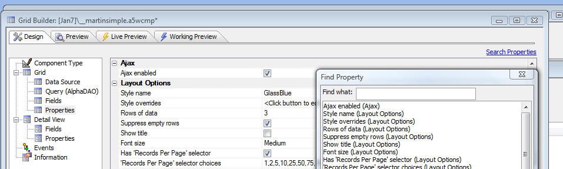

Grid, Tabbed UI and Page Layout Builder - Search for Property
A new feature has been added to these builders that allows you to search for a property in the Grid. This makes it very easy to find a particular property that you want to edit.
A 'search' hyperlink is visible above each Property Grid and when you click the hyperlink, a window open. As you type in the search box, the list is filtered. Double click or press enter to give focus to the selected property.
